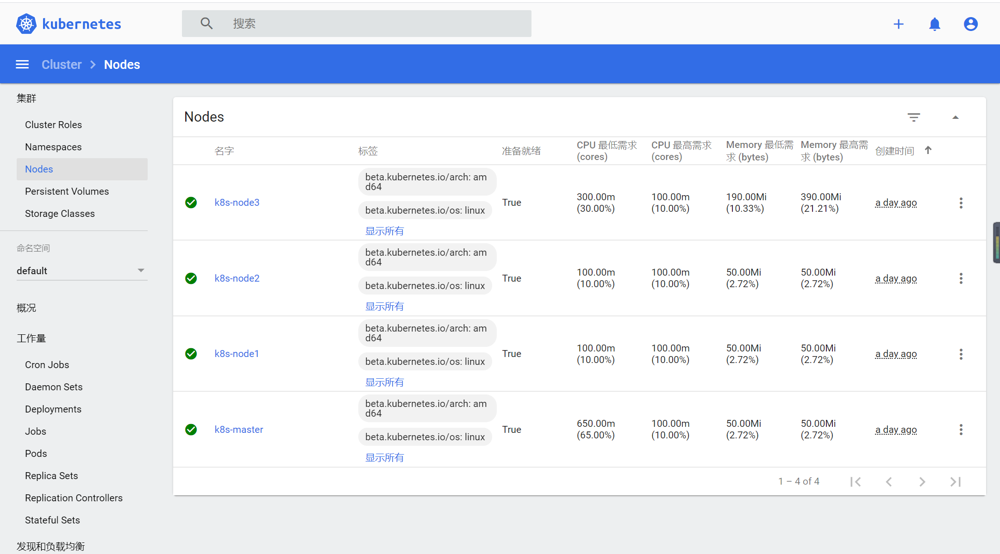

Contents
Kubernetes基础¶
Kubernetes致力于提供跨主机集群的自动部署、扩展、高可用以及运行应用程序容器的平台，其遵循主从式架构设计，其组件可以分为管理单个节点（Node）组件和控制平面组件。Kubernetes Master是集群的主要控制单元，用于管理其工作负载并指导整个系统的通信。Kubernetes控制平面由各自的进程组成，每个组件都可以在单个主节点上运行，也可以在支持高可用集群的多个节点上运行。
Master节点¶
Master节点是Kubernetes集群的控制节点，在生产环境中不建议部署集群核心组件外的任何Pod，公司业务的Pod更是不建议部署到Master节点上，以免升级或者维护时对业务造成影响。Master节点的组件包括：
APIServer¶
APIServer是整个集群的控制中枢，提供集群中各个模块之间的数据交换，并将集群状态和信息存储到分布式键－值（key-value）存储系统Etcd集群中。同时它也是集群管理、资源配额、提供完备的集群安全机制的入口，为集群各类资源对象提供增删改查以及watch的REST API接口。
APIServer作为Kubernetes的关键组件，使用Kubernetes API和JSON overHTTP提供Kubernetes的内部和外部接口。
Scheduler¶
Scheduler是集群Pod的调度中心，主要是通过调度算法将Pod分配到最佳的节点（Node），它通过APIServer监听所有Pod的状态，一旦发现新的未被调度到任何Node节点的Pod（PodSpec.NodeName为空），就会根据一系列策略选择最佳节点进行调度，对每一个Pod创建一个绑定（binding），然后被调度的节点上的Kubelet负责启动该Pod。Scheduler是集群可插拔式组件，它跟踪每个节点上的资源利用率以确保工作负载不会超过可用资源。因此Scheduler必须知道资源需求、资源可用性以及其他约束和策略，例如服务质量、亲和力／反关联性要求、数据位置等。Scheduler将资源供应与工作负载需求相匹配以维持系统的稳定和可靠，因此Scheduler在调度的过程中需要考虑公平、资源高效利用、效率等方面的问题。
Controller Manager¶
Controller Manager是集群状态管理器（它的英文直译名为控制器管理器），以保证Pod或其他资源达到期望值。
当集群中某个Pod的副本数或其他资源因故障和错误导致无法正常运行，没有达到设定的值时，Controller Manager会尝试自动修复并使其达到期望状态。
Controller Manager包含NodeController、ReplicationController、EndpointController、NamespaceController、ServiceAccountController、ResourceQuotaController、ServiceController和TokenController，该控制器管理器可与API服务器进行通信以在需要时创建、更新或删除它所管理的资源，如Pod、服务断点等。
Node节点¶
Node节点也被称为Worker或Minion，是主要负责部署容器（工作负载）的单机（或虚拟机），集群中的每个节点都必须具备容器的运行环境（runtime），比如Docker及其他组件等。Kubelet作为守护进程运行在Node节点上，负责监听该节点上所有的Pod，同时负责上报该节点上所有Pod的运行状态，确保节点上的所有容器都能正常运行。当Node节点宕机（NotReady状态）时，该节点上运行的Pod会被自动地转移到其他节点上。
Node节点包括：
Kube-Proxy¶
负责各Pod之间的通信和负载均衡。
Docker Engine¶
Docker引擎，负载对容器的管理。
查询Kubernetes的健康状态¶
# kubectl cluster-info
Kubernetes master is running at https://172.16.60.236:6443
KubeDNS is running at https://172.16.60.236:6443/api/v1/namespaces/kube-system/services/kube-dns:dns/proxy
To further debug and diagnose cluster problems, use 'kubectl cluster-info dump'.
# kubectl -s https://172.16.60.236:6443 get componentstatuses
NAME STATUS MESSAGE ERROR
controller-manager Healthy ok
scheduler Healthy ok
etcd-0 Healthy {"health":"true"}
# kubectl -s https://172.16.60.236:6443 get node
NAME STATUS ROLES AGE VERSION
k8s-master Ready master 46h v1.18.3
k8s-node1 Ready <none> 45h v1.18.3
k8s-node2 Ready <none> 45h v1.18.3
k8s-node3 Ready <none> 45h v1.18.3
安装Kubernetes的扩展插件¶
部署Dashboard¶
部署dashboard 2.x版本¶
$ wget https://raw.githubusercontent.com/kubernetes/dashboard/v2.0.0-beta8/aio/deploy/recommended.yaml
默认Dashboard只能集群内部访问，修改Service为NodePort类型，暴露到外部：
vi recommended.yaml
kind: Service
apiVersion: v1
metadata:
labels:
k8s-app: kubernetes-dashboard
name: kubernetes-dashboard
namespace: kubernetes-dashboard
spec:
ports:
- port: 443
targetPort: 8443
nodePort: 30001
type: NodePort
selector:
k8s-app: kubernetes-dashboard
$ kubectl apply -f recommended.yaml
$ kubectl get pods,svc -n kubernetes-dashboard
NAME READY STATUS RESTARTS AGE
pod/dashboard-metrics-scraper-6b4884c9d5-kqq5b 1/1 Running 0 9m39s
pod/kubernetes-dashboard-7bfbb48676-zgfbm 1/1 Running 0 9m40s
NAME TYPE CLUSTER-IP EXTERNAL-IP PORT(S) AGE
service/dashboard-metrics-scraper ClusterIP 10.108.188.118 <none> 8000/TCP 9m40s
service/kubernetes-dashboard NodePort 10.103.134.98 <none> 443:30005/TCP 9m40s
访问地址：https://NodeIP:30001
创建service account并绑定默认cluster-admin管理员集群角色：
$ kubectl create serviceaccount dashboard-admin -n kube-system
$ kubectl create clusterrolebinding dashboard-admin --clusterrole=cluster-admin --serviceaccount=kube-system:dashboard-admin
$ kubectl describe secrets -n kube-system $(kubectl -n kube-system get secret | awk '/dashboard-admin/{print $1}')
# 给匿名用户授权
$ kubectl create clusterrolebinding test:anonymous --clusterrole=cluster-admin --user=system:anonymous

示例应用Guestbook¶
本章要演示的示例应用是一个名叫Guestbook的应用，Guestbook是一个典型的Web应用。Guestbook的部署运行结构如图所示。
Guestbook结构

Guestbook包含两部分。
- Frontend
Guestbook的Web前端部分，无状态节点，可以方便伸缩，本例中将运行3个实例。
- Redis
Guestbook的存储部分，Redis采用主备模式，即运行1个Redis Master和2个Redis Slave，Redis Slave会从Redis Master同步数据。
Guestbook提供一个非常简单的功能：在Frontend页面提交数据，Frontend则将数据保存到Redis Master，然后从Redis Slave读取数据显示到页面上。
Guestbook定义文件在Kubernetes发布包的examples/guestbook目录下：
$ wget https://github.com/kubernetes/kubernetes/releases/download/v1.1.1/kubernetes.tar.gz
$ tar zxvf kubernetes.tar.gz
$ cd kubernetes/examples/guestbook
运行Redis¶
首先在Kubernetes上部署运行Redis，包括Redis Master和Redis Slave。
创建Redis Master Pod¶
Redis Master Replication Controller的定义文件redis-master-controller.yaml：
apiVersion: v1
kind: ReplicationController
metadata:
name: redis-master
labels:
name: redis-master
spec:
replicas: 1
selector:
name: redis-master
template:
metadata:
labels:
name: redis-master
spec:
containers:
- name: master
image: redis
ports:
- containerPort: 6379
通过定义文件创建Redis Master Replication Controller：
$ kubectl create -f redis-master-controller.yaml
replicationcontroller "redis-master" created
创建成功后，可查询Redis Master Replication Controller：
$ kubectl get replicationcontroller redis-master
CONTROLLER CONTAINER(S) IMAGE(S) SELECTOR REPLICAS AGE
redis-master master redis name=redis-master 1 15s
Redis Master Replication Controller将会创建1个Redis Master Pod，创建出来的Pod就会带上Label name=redis-master：
$ kubectl get pod --selector name=redis-master
NAME READY STATUS RESTARTS AGE
redis-master-vdkfp 1/1 Running 0 31s
Replication Controller在创建出Pod以后，将会保证Pod按照指定副本数目持续运行，而通过Replication Controller也可以对Pod进行一系列操作，包括滚动升级和弹性伸缩等。
创建Redis Master Service¶
Kubernetes中Pod是变化的，特别是当受到Replication Controller控制的时候，而当Pod发生变化的时候，Pod的IP也是变化的。
这就导致了一个问题：在Kubernetes集群中，Pod之间如何互相发现并访问呢?比如我们已经运行了Redis Master Pod，那么Redis Slave Pod如何获取Redis Master Pod的访问地址呢？为此Kubernetes提供了Service来实现服务发现。
Kubernetes中Service是真实应用的抽象，将用来代理Pod，对外提供固定IP作为访问入口，这样通过访问Service便能访问到相应的Pod，而对访问者来说只需知道Service的访问地址，而不需要感知Pod的变化。
上一步中已经运行起Redis Master Pod，现在创建Redis Master Service来代理Redis Master Pod，Redis Master Service的定义文件redis-master-service.yaml：
apiVersion: v1
kind: Service
metadata:
name: redis-master
labels:
name: redis-master
spec:
ports:
# the port that this service should serve on
- port: 6379
targetPort: 6379
selector:
name: redis-master
Service是通过Label来关联Pod的，在Service的定义中，设置.spec.selector为name= redis-master，将关联上Redis Master Pod。
通过定义文件创建Redis Master Service：
$ kubectl create -f redis-master-service.yaml
service "redis-master" created
创建成功后查看Redis Master Service：
$ kubectl get service redis-master
NAME TYPE CLUSTER-IP EXTERNAL-IP PORT(S) AGE
redis-master ClusterIP 10.99.22.49 <none> 6379/TCP 11m
Redis Master Service的查询信息中显示属性CLUSTER_IP为 10.99.22.49，属性PORT(S)为6379/TCP，其中 10.99.22.49是Kubernetes分配给Redis Master Service的虚拟IP，6379/TCP则是Service会转发的端口（通过Service定义文件中的.spec.ports[0].port指定），Kubernetes会将所有访问 10.99.22.49:6379的TCP请求转发到Redis Master Pod中，目标端口是6379/TCP（通过Service定义文件中的spec.ports[0].targetPort指定）。
因为创建了Redis Master Service来代理Redis Master Pod，所以Redis Slave Pod通过Redis Master Service的虚拟IP 10.99.22.49就可以访问到Redis Master Pod，但是如果只是硬配置Service的虚拟IP到Redis Slave Pod中，这样还不是真正的服务发现，Kubernetes提供了两种发现Service的方法。
- 环境变量
当Pod运行的时候，Kubernetes会将之前存在的Service的信息通过环境变量写到Pod中，以Redis Master Service为例，它的信息会被写到Pod中：
REDIS_MASTER_SERVICE_HOST=10.99.22.49
REDIS_MASTER_PORT_6379_TCP_PROTO=tcp
REDIS_MASTER_SERVICE_PORT=6379
REDIS_MASTER_PORT=tcp://10.99.22.49
REDIS_MASTER_PORT_6379_TCP=tcp://10.99.22.49
REDIS_MASTER_PORT_6379_TCP_PORT=6379
REDIS_MASTER_PORT_6379_TCP_ADDR=10.99.22.49
这种方法要求Pod必须在Service之后启动，之前启动的Pod没有这些环境变量。采用DNS方式就没有这个限制。
- DNS 当有新的Service创建时，就会自动生成一条DNS记录，以Redis Master
Service为例，有一条DNS记录：
redis-master => 10.99.22.49
创建Redis Slave Pod¶
redisslave镜像Dockerfile下载链接地址
https://github.com/kubernetes/kubernetes/tree/v1.1.1/examples/guestbook/redis-slave
通过Replication Controller可创建Redis Slave Pod，将创建两个Redis Slave Pod。Redis Slave Replication Controller的定义文件redis-slave-controller.yaml：
apiVersion: v1
kind: ReplicationController
metadata:
name: redis-slave
labels:
name: redis-slave
spec:
replicas: 2
selector:
name: redis-slave
template:
metadata:
labels:
name: redis-slave
spec:
containers:
- name: worker
image: 1879324764/hjl-redisslave:v1
env:
- name: GET_HOSTS_FROM
value: dns
ports:
- containerPort: 6379
查看Pod信息
#通过自定义文件创建 Redis Slave Replication Controller
$ kubectl create -f redis-slave-controller.yaml
replicationcontroller/redis-slave created
#创建成功后，查询Redis Slave Replication Controller
$ kubectl get replicationcontroller redis-slave
NAME DESIRED CURRENT READY AGE
redis-slave 2 2 0 6s
#Redis Slave Replication Controller创建运行两个Redis Slave Pod
$ kubectl get pod --selector name=redis-slave
NAME READY STATUS RESTARTS AGE
redis-slave-dzdjc 1/1 Running 0 100s
redis-slave-qpzn4 1/1 Running 0 100s
创建Redis Slave Service¶
创建Redis Salve Service来代理Redis Salve Pod，Redis Salve Service的定义文件redis-slave-service.yaml：
apiVersion: v1
kind: Service
metadata:
name: redis-slave
labels:
name: redis-slave
spec:
ports:
# the port that this service should serve on
- port: 6379
selector:
name: redis-slave
查看service信息
# 通过定义文件创建Redis Salve Service
$ kubectl create -f redis-slave-service.yaml
service/redis-slave created
# 查询Redis Salve Service
$ kubectl get service redis-slave
NAME TYPE CLUSTER-IP EXTERNAL-IP PORT(S) AGE
redis-slave ClusterIP 10.109.114.132 <none> 6379/TCP 16s
运行Frontend¶
创建Frontend Pod¶
通过Frontend Replication Controller来创建Frontend Pod，将创建3个Frontend Pod。
gb-frontend:v3的Dockerfile下载链接
https://github.com/kubernetes/kubernetes/blob/v1.1.1/examples/guestbook/php-redis/Dockerfile
Frontend Replication Controller的定义文件frontend-controller.yaml：
apiVersion: v1
kind: ReplicationController
metadata:
name: frontend
labels:
name: frontend
spec:
replicas: 3
selector:
name: frontend
template:
metadata:
labels:
name: frontend
spec:
containers:
- name: php-redis
image: 1879324764/hjl-frontend:v3
env:
- name: GET_HOSTS_FROM
value: dns
ports:
- containerPort: 80
查看Pod信息
#通过自定义文件创建Frontend Replication Controller
$ kubectl create -f frontend-controller.yaml
replicationcontroller/frontend created
#创建成功后，查询Frontend Replication Controller
$ kubectl get replicationcontroller frontend
NAME DESIRED CURRENT READY AGE
frontend 3 3 0 18s
#Frontend Replication Controller创建运行3个Frontend Pod
$ kubectl get pod --selector name=frontend
NAME READY STATUS RESTARTS AGE
frontend-8bfcq 1/1 Running 0 2m51s
frontend-8c2cp 1/1 Running 0 2m51s
frontend-mflxl 1/1 Running 0 2m51s
创建Frontend Service¶
创建Frontend Service代理Frontend Pod，Frontend Service的定义文件frontend-service.yaml：
apiVersion: v1
kind: Service
metadata:
name: frontend
labels:
name: frontend
spec:
ports:
# the port that this service should serve on
- port: 80
selector:
name: frontend
查看service信息
# 通过定义文件创建Frontend Service
$ kubectl create -f frontend-service.yaml
service/frontend created
# 查询Frontend Service
$ kubectl get service frontend
NAME TYPE CLUSTER-IP EXTERNAL-IP PORT(S) AGE
frontend ClusterIP 10.98.214.195 <none> 80/TCP 10s
设置Guesbook外网访问¶
Service的虚拟IP是由Kubernetes虚拟出来的内部网络，而外部网络是无法寻址到的，这时候就需要增加一层网络转发，即外网到内网的转发。实现方式有很多种，我们这里采用一种叫作NodePort的方式来实现。即Kubernetes将会在每个Node上设置端口，称为NodePort，通过NodePort端口可以访问到Pod。
修改Frontend Service的定义文件frontend-service.yaml，设置spec.type为NodePort：
apiVersion: v1
kind: Service
metadata:
name: frontend
labels:
name: frontend
spec:
type: NodePort
ports:
- port: 80
selector:
name: frontend
查看service信息
# 重新创建Frontend Service
$ kubectl replace -f frontend-service.yaml --force
service/frontend replaced
# 查看frontend对外映射的端口
$ kubectl get service frontend
NAME TYPE CLUSTER-IP EXTERNAL-IP PORT(S) AGE
frontend NodePort 10.96.36.2 <none> 80:30610/TCP


清理Guestbook¶
清理Guestbook，只需要分别删除创建出的Replication Controller和Service：
$ kubectl delete replicationcontroller redis-master redis-slave frontend
replicationcontroller "redis-master" deleted
replicationcontroller "redis-slave" deleted
replicationcontroller "frontend" deleted
$ kubectl delete service redis-master redis-slave frontend
service "redis-master" deleted
service "redis-slave" deleted
service "frontend" deleted